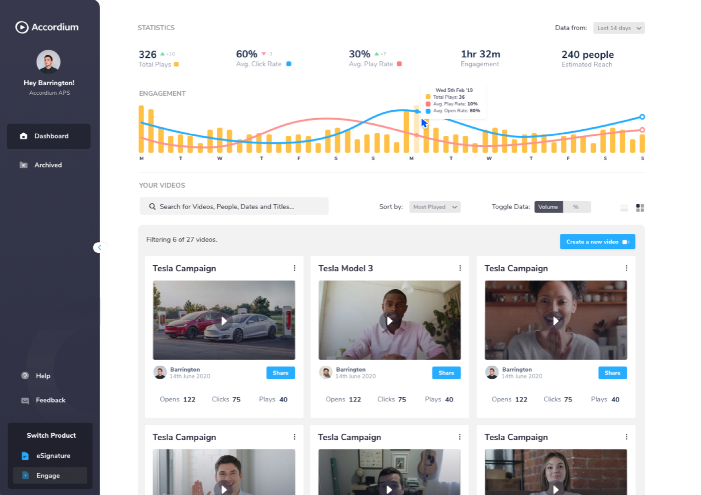

Close more deals with personal videos
A UX CASE STUDY
Most salespeople have used text to reach out to prospects, either through cold emails or LinkedIn messaging.
In the prospects' perspective, this approach is highly overused and can easily sink in the sea of cold messages, they tend to overlook or just completely ignore the message sent to them.
How can we utilize videos as an alternative and increase engagement?
Background:
Innovating how businesspeople close deals.
3 years ago, Accordium started with eSignature SAAS for businesspeople. Accordium eSignature has provided users the ability to send and sign contracts online with a swipe of a button.

With a team of 3 (PM, CPO and I), we are designing a new video solution to help salespeople close deals faster, called Accordium Engage.
What's the problem?
As mentioned previously, we found out that sending cold email messages has not been very effective. Most prospects will ignore this message as they'll treat it as spam. Generally speaking, sales text messages tend to be long, boring and potentially robotic. Imagine having 3 cold emails in your mail inbox every day, that's 3 too many to read!
We want to build a seamless tool to increase engagements which in turn, increase sales for our users.
Who are we building this for?
There are a lot of video platforms out there, but we are targeting a very niche market. We are building a product intended for business development team or salespeople who are trying to acquire customers through the world wide web.
At the same time, we would like to convert our current eSignature user base to adopt this new service as well. The majority of our current users are based in the UK and South America.
My role
I was the Product Designer in the team, working with my a Product Lead and a Product Manager. Currently, we also have 5 active developers who are assigned to build this new product.
Scope & Constraints
When we initially started, our resources are limited to only 3 developers to build this project. So we want to create a Minimum Viable Product (MVP) within 4 months to be launched in early 2020.
Having that in mind, our business mainly revolves around salespeople, particularly, to close deals.
Accordium is now based in Malaysia but our current and target clients are located remotely in Europe and the States.
Are we building the right product?
Sam (not a real name) has been a business developer for 5 years, he is working at one of the top leading brands.
Daily, he tries to reach out to at least 20 people to convert them as users or buy his company's product. To optimize time and energy, he created a message template and only change the First and Last name to the designated receiver.
Over time, he realizes that only a small percentage of prospects open the message and even a smaller number of people reach out back to him.
This is, of course, a big issue since the number of prospects even-though a lot, is finite --every-time a prospect ignored his message, an opportunity is lost.
Standing out from the crowd.
So Sam rethinks his strategy and tried out a different approach. He created an A/B testing experiment where he will send a normal text message to Group A and a personal video to the other group.
The results were mindblowing.
He found out that with personalized sales videos, he can;
- Improve lead conversions by 35%
- Shorten the deal cycle by 81%
- Most importantly, Increase email replies by 76%!
Great! Now we know that personalized video has a lot of proven benefits, it's time to start building an MVP.
The build:
Always start with the user.
We are quite lucky to have a few salespeople in the team ourselves for user research. Of course, this is not ideal since they might provide biased feedbacks provided that they already have some prior knowledge about the product we are building.
However, it is still a good start to get a glimpse of how salespeople work. What's their day to day activity and what kind of problem they face every day.
Our team also constantly communicate with our potential and existing clients to ask for feedback.
The team had come up with a buyer user persona based on the current knowledge of the team. Over time, we're trying to move away from user personas and gather real user feedback and data to validate design decisions. User personas are just used to guide the initial direction of the product.

Based on this, we created a wireframe and tested the wireframe with potential users. Before I start working on a wireframe, I usually start with pen and paper, I find that I generate ideas a lot faster without having to think about software tool limitations.

Alternatively, sometimes I conduct a brainstorming session with my team through the Crazy 8 exercise. I will ask the team to take a piece of A4 paper and divide it into 8 sections. In 8 minutes team members should create 8 rough initial designs.
The idea is to generate as many ideas as possible within a short timeframe, focusing on quantity of ideas, not quality, and then once you’ve got a bunch of divergent thinking on one topic, to begin converging on some winning ideas by voting on the favorites.

It depends on the complexity of the feature, but usually, I'll create 3 different user flows or design options to be reviewed by the team. These different user flows will also go through some user testing before the final idea is solidified.

Recently, I'm using Invision Studio to build animated micro-interactions. I find that Micro-interactions play an essential role in a user's understanding of computer systems. They give the user feedback, both good and bad, on what the current status of the system is, what the result of their actions will be or what has already happened as a result of their action and guide them what they should do next.
Handing Over
Handing over the design is arguably one of the most important parts of the product lifecycle. At the end of the day, it doesn't matter how good your design is, if it's not translated properly into production build, it will lose its value.
I use multiple mediums for handovers:
- MarvelApp for static page mockups.
- InVision Studio for Micro-interactions and animations.
- Video walkthrough for flow explanation reference and if there's mixed content like GIFS on the mockup.
- A face-to-face meeting to explain flows and design reasonings.
On top of that, I also put handover notes inside the mockup itself for developers' reference.

Designers are human too! Sometimes there's an unforeseen UX flaw that was missed. This is the reason why I prefer explaining design reasonings to the tech team. In a way, I'm allowing developers to question my design decisions (usually will test my understanding of the problem) and also making the design practice more inclusive in the team, killing two birds with one stone.
The Accordium Engage
Tech Team and Product Team execute tasks in separate Sprints but simultaneously. Design is usually always 2 Sprints ahead. However, this approach was only introduced after I joined in. Since I'm working on all the final designs, initially the tech team was delayed a little bit and I was in crunch mode all the time. At least for the first few months.
So not all the features have been pushed to production yet and they're still working at it.
Putting video as the dashboard centerpiece.
Based on our user research, most of our users record and send video messages through Accordium Chrome Extension and the Gmail Accordium Plugin.


To give you a better idea of how our users use Accordium, I've generated a user journey map below.

Before the dashboard was built, every action was done through the extensions. So we contacted our users and talked about the problems they're facing right now. Having remote clients posed a big challenge for us since there are a time difference and interaction time with them is limited.
Here are some of the key items we've learned;
- Users are obsessed with checking the performance of their sent videos (20 to 30 times and even after working hours) and also phone to mainly receive a callback or see when the videos were watched or replayed and watching average rate. Main driver: Users always want to improve their conversion rates, this includes checking the performance based on the content and length of the video.
- They record the same video content but with different "Whiteboard trick" intro to entice receivers to watch the video. Main driver: Video personalization, higher engagements are recorded when the video intro is personalized.
- They want to have a call to action on the video page so that they can guide their user to visit certain pages seamlessly. Main driver: having a Call-to-action on the video provide a clear goal of what the sender wants the receiver to do.
Here's the design that we came up with, the main statistics are put front and center on the dashboard. Users can access all the videos in one place and main video metrics are displayed on each video card as well to give a rough preview of how the videos are performing.

Based on the user feedback, sharing video is the most used feature on Accordium, so it is vital to make sure that the Share feature is accessible on the main parts of the dashboard.
1. Advanced metrics as a differentiator
Our users have used other video software before, most video software out there is mostly intended to share video content and not focused on closing deals. That's why our users prefer us as we provide actionable metrics that can assist them in improving conversion rates.

Key features that we have are the Attention Drop-off rate which tells the user where receivers get bored. This data helps them create more engaging video content.
2. Record once, get the same results.
As mentioned previously, our users use the same video content but with a little tweak. They change the intro so that it appears more personalized while the content is actually the same. Of course, this takes a lot of time and repetitive.
If you're not working in sales, you might not be familiar with the "Whiteboard Trick". Since most shared video URLs include a video thumbnail of the first part of the video, business developers customized this to capture the initial impression.

With the Accordium Animated GIF feature, the user can record a custom GIF for each video link sent while reusing the same video. This will save a lot of time on the video production side but still maintain the benefit of the trick.

Also, we intentionally compromised for bigger GIF thumbnail size by using a 25FPS frame rate to make the thumbnail appear more like a video as this has been proven to increase click rates.
3.Nudge prospects with Call-to-action
This is also one of the most requested features. Users want the ability to link their website or similar actions on the shared Accordium video URL.
Currently, without the CTA, the prospects flow is quite messy.

We want to streamline this and reduce the friction of going back and forth between pages or apps.

Users will also have absolute control over page branding and what content to show with the Customize Panel. Since most business developers are not very familiar with colors, we put the HEX code input field so that they can just copy and paste from the company brand book.
Outcome
Unfortunately, this is the disappointing part. Accordium recently hired me to build this platform, after intensive research and work, we were told that the funding that we were hoping to get didn't pull through and the business can't go on.
Of course, as a product designer, this made me really sad because I can't properly validate all design solutions. The initial stages were just to push an MVP, I was not satisfied with the design yet because I believe--
"If you are not embarrassed by the first version of your product, you’ve launched too late. -- Reid Hoffman"
My intention was not to build a perfect product but rather an early release to work as a base for my user research. I was planning to conduct more intensive user testing once we had an MVP and more active users.
In this case, a lot of the main features were not given a proper chance to be utilized by the users, leaving a gap for legitimate quantitative and qualitative analysis. However, I take this setback as a lesson to solidify my perspective on the importance of user research and time-to-market speed in the current competitive market.
At the end of the day, I can't control everything. Knowing that I've given my best and that I've had fun along the way is enough.
Cheers!
PS: I hope you enjoyed reading this case study, although there some massive product lifecycle gaps, I enjoyed the process and still learned a lot from this experience and I hope it is beneficial for you too! :D